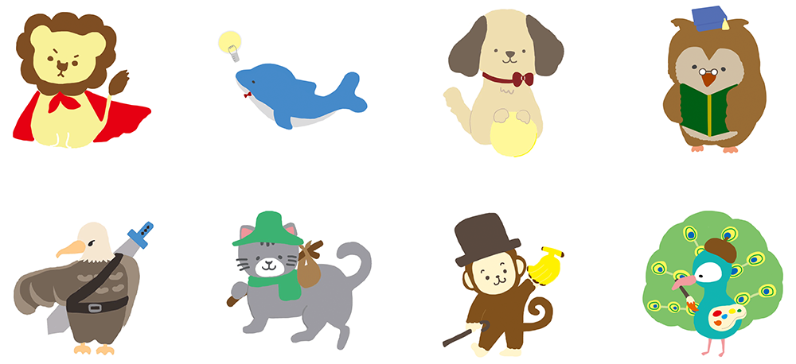

自己紹介をお願いします！
盛岡情報ビジネス＆デザイン専門学校情報システム科金野 勇太郎です。
長所・短所は？
長所は向上心です。
短所は心配性なところです。
自分を動物に例えると何ですか？

性格診断で調べた結果猫でした。ちなみにスコティッシュフォールドが好きです。
犬はシベリアンハスキーが好きです。
自分をIT機器に例えると何だと思いますか？
スマートフォンです。スマートだからです。
ストレス発散方法はありますか？
サイクリングです。冬場は発散できないです。
一つ夢が叶うとしたら何をお願いしますか？
猫を飼いたいです。
今後働く上で、モチベーションを高めるものは何だと思いますか？
逆に、下げるものは何だと思いますか？
ライフワークバランスを維持できる会社だと思います。自分の働きに見合った給料をもらえないのはモチベーションが下がると思います。
100万円あったら何に使いますか？
夢がないですが、多分貯金すると思います。猫を飼う資金にします。
「オススメの○○」を教えてください！
僕はおすすめの猫について書きたいと思います。
スコティッシュフォールドです。Youtubeで猫の動画を視聴しているのですが一番かわいいと思います。飼います。